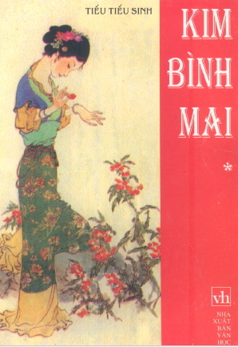
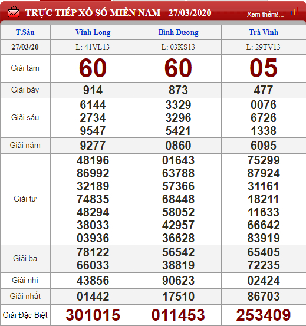

Tiếu Tiếu Sinh
Thể Loại : Tiểu thuyết Trung Quốc
Năm phát hành : 2009
Đánh giá :★★★★☆
⚮ 10000000 views

Giới Thiệu
Bạn đọc đang tiếp xúc với bộ tiểu thuyết trường thiên , một pho “kì thư” rất đặc sắc của nền văn học cổ điển Trung Hoa. Đó thực sự là lịch sử cuộc đời đầy tội ác và sinh hoạt gia đình nhơ bẩn của Tây Môn Khánh, một kẻ hãnh tiến xuất thân từ một chủ hiệu sinh dược, nhưng do những mánh khóe bóc lột và hành vi ác bá, kéo bè kéo cánh, thông lưng với quan lại một bước nhảy tót lên đia vị một thổ hào thân sĩ giàu tiền của, đầy quyền thế. Từ cái bàn đạp đó, ngoi lên vin vào quan hệ nghĩa phụ nghĩa tử với Thái Kinh, một viên đại thần hiển hách ở triều đình lúc bấy giờ, Tây Môn Khánh đã trở thành Đề hình Thiên hộ Ở bản huyện, tham lam tàn ác, bẻ cong phép nước, ăn tiền hối lộ, hại người lương thiện, và sống cuộc đời dâm ô cực kỳ bỉ ổi.
Chap 1
Niên hiệu Chính Hòa đời Huy Tông triều Tống, tại huyện Thanh Hà, phủ Đông Bình, tỉnh Sơn Đông, có một người con nhà gia thế, tướng mạo cực khôi ngô nhưng có tính xa xỉ hoang phí, khoảng hai mươi sáu, hai mươi bảy tuổi, họ Tây Môn, húy Khánh. Cha là Tây Môn Quỳ, thường tới vùng Xuyên Quảng mua bán dược phẩm, nên có mở tại huyện Thanh Hà một cửa hiệu bán thuốc khá lớn. Gia đình Tây Môn có nhà cửa đồ sộ, kẻ ăn người ở tấp nập, ngựa nuôi từng bảy, tuy chưa phải là thập phần phú quý nhưng cũng vào loại hào phú tại huyện Thanh Hà. Vợ chồng Tây Môn Qùy viên ngoại thì cha mẹ đều đã quy tiên, chỉ có một con trai nên yêu quý như hòn ngọc trên tay. Người con trai này vì được nuông chiều quá mức nên không chịu học hành, suốt ngày chỉ rong chơi phóng đãng. Sau khi cha mẹ mất thì không chịu lo làm ăn, chi.
Chap 2
Lại nói về Tây Môn Khánh tới chùa Vĩnh Phúc tìm gặp vị cao tăng họ Thích để nhờ đoán giấc mộng lạ nơi quán rượu. Tới cổng, vị tăng trụ trì nhận ra Tây Môn Khánh tại gần cổng. Tây Môn Khánh ngẩng đầu nhìn, trên cổng có tấm biển viết bốn chữ lớn “Đại hùng bảo điện”, đó là thủ bút của tể tướng đương triều là Thái Kinh. Bên trong cổng là một bức tượng Phật Di Lặc vĩ đại. Từ cổng vào, theo một cái hành lang thì tới phòng khách, nơi đây vị tăng trụ trì và Tây Môn Khánh phân ngôi chủ khách mà ngồi. Vị tăng hỏi: Lâu lắm Đại quan nhân không giáng lâm nơi này, nay tới đây quả là quý hóa lắm. Chắc là Đại quan nhân vẫn được khang an vạn phúc. Tây Môn Khánh nói: Xin cám ơn đã có lời hỏi thăm, nhưng hôm nay tôi tới đây vì nghe nói chùa nhà có một vị cao tăng họ Thích giỏi đoán mộng. Phải vậy chăng ?
Chap 3
Lại nói về bọn Tây Môn Khánh, bốn người kéo tới Lý Quế Thư, bảo làm một bữa tiệc thịnh soạn.
Tiệc dọn ra, Tây Môn Khánh ngồi một bên chủ tọa, còn ba người kia ngồi một bên. Lý Quế Thư đứng ngồi hầu rượu.
Lại có mấy ca nữ tới, một người là Vương Nguyệt
Nga, tức là cháu gái của Vương bà ở đường trước huyện, cạnh nhà Võ Đại. Người kia là Trương Cầm Nhị Cả hai đều
giỏi đàn hát. Rượu được vài tuần, Vương Nguyệt Nga thổi lên một khúc tiêu, rồi hát bài “Di muội khúc”. Hát rằng:
Em cùng chị hái sen
Hoa sen thật xinh đẹp
Sáng hoa như muốn nói
Chiều trông hoa đáng thương
Em bỏ đi hái ấu
Ấu củ nổi củ chìm
Củ hai sừng giắt búi tóc
Củ bốn sừng làm bánh xe
Mùa thu nước lành lạnh
Hái ấu đừng hái sung
Hoa ấu chiều má hồng
Nước hồ xanh xanh trong
Hái sen đừng gãy ngó
Tơ ngó như ruột mềm
Hạt sen ruột lại đắng
Hay là lên hái ấu
Hay là nên hái sen
Trời cũng chiều rồi đấy
Uyên ương đã ngủ yên.
Khúc hát chấm dứt, ứng Bá Tước bảo:
Khúc này cũng hay đấy chứ, đại ca có nhớ ngày trước nàng Lục Vân Anh từng hát khúc này không ?
Tây Môn Khánh đáp:
Lâu tôi cũng quên rồi.
Trương Cầm Nhi thấy Vương Nguyệt Nga đã hát xong, bèn nâng đàn vừa gảy vừa hát.
Hát rằng:
Mặt trời xuống ngọn cây
Mưa rơi đuổi hết nắng
Con gái nhà ai kia
Thướt tha tới bến nước
Chap 4
Hôm đó Tây Môn Khánh bị đánh mấy cái nhưng đổi lại được trăm lạng bạc của Tử quan nhân thì vui mừng lắm. Về tới nhà còn thấy Hoa Tử Hư nghe xong vỗ tay khen ngợi rồi nói: Đại ca đã mất công khó để lo cho tôi, ngày khác tôi xin tạ Ơn. Tây Môn Khánh gạt đi: Chỗ anh em mà nói chuyện ơn nghĩa làm gì. Nói xong cởi quần áo trả lại Hoa Tử Hư. Hoa Tử Hư thay xong thì nói: Trời cũng chiều rồi, tôi xin cáo từ, ngày mai sẽ sang gặp đại ca. Tây Môn Khánh tiễn bạn ra cổng rồi quay vào. Nguyệt nương nói: Bệnh tình Trác Nhị Thư xem ra nguy kịch rồi, sợ không qua khỏi đêm nay.
Chap 5
V ì cái tang của Trác Nhị Thư mà phải sau bốn mươi chín ngày, Tây Môn Khánh mới tới được nhà Vương bà nhờ lo chuyện mối manh, rồi nói: Nếu bà lo việc này cho thành, tôi xin tặng mười lạng bạc. Vương bà nói: Cái đó đã đành, nhưng với đám này, không những tôi phải cực nhọc lo liệu, mà Đại quan nhân cũng phải đủ năm điều kiện thì mới được. Thứ nhất là phải đẹp trai, thứ nhì là phải sành sỏi, thứ ba là phải có tiền, thứ tư là phải chịu khó kiên nhẫn chờ đợi, thứ năm là phải mất nhiều công phu. Có đủ năm điều ấy thì việc mới thành. Tây Môn Khánh nói: Tưởng cái gì thứ năm điều ấy thì tôi có đủ. Thứ nhất, như bà đang thấy đây, diện mạo tôi đâu phải xấu xa; thứ nhì, tôi từ nhỏ đã ra vào đủ chốn ăn chơi nên cũng tạm hiểu đời, thứ ba, tôi chẳng giàu sang nhưng cũng đủ sống, thứ tư, tôi rất kiên nhẫn chịu đựng; thứ năm, tôi bằng lòng tốn nhiều công phu, nếu không tôi tới lui nơi này làm gì. Cho nên bà cứ ráng lo giùm cho xong việc đi, tôi cam đoan hậu tạ. Vương bà nói:
Chap 6
Vận Ca tay xách giỏ lê nhưng quên cả bán lê, chỉ đi hết đường này đường nọ để tìm Võ Đại. Sau một hồi tìm kiếm, Vận Ca trông thấy Võ Đại gánh bánh từ xa đi tới. Vận Ca đứng lại chờ Võ Đại tới gần rồi hỏi: Lâu nay tôi không gặp ca ca, hồi này coi bộ ca ca mập ra đấy. Võ Đại đặt gánh xuống đáp: Tao thì lúc nào cũng gầy gò ốm yếu như thế này mà thôi, làm sao mà mập ra được. Vận Ca bảo: Tôi đang cần ít lúa nuôi gà, nghe người ta nói là ca ca có. Tao đâu có nuôi gà vịt gì mà có lúa trong nhà. Vận Ca bảo: Ca ca cũng như con gà con vịt, ăn nhiều quá chỉ mập ra mà hóa ngu đi, chẳng trách vợ ca ca bỏ ca ca mà đi với người khác là phải. Võ Đại nổi giận: Thằng oắt kia, sao tự nhiên mày lại mắng tao, so sánh tao với gà vịt ? Vợ tao đâu có ngoại tình.
Chap 7